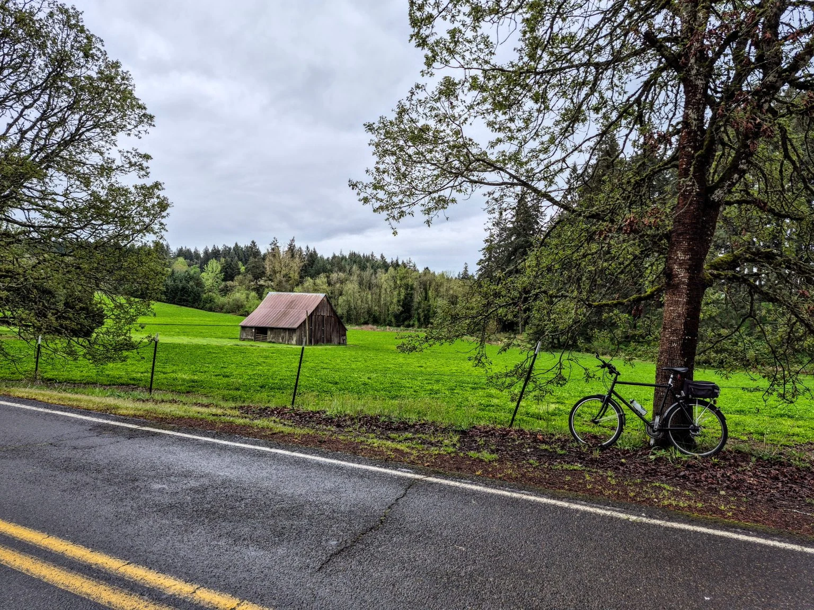
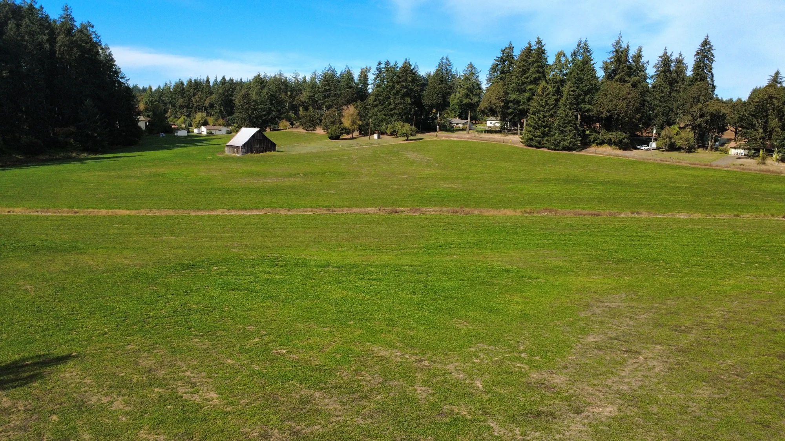
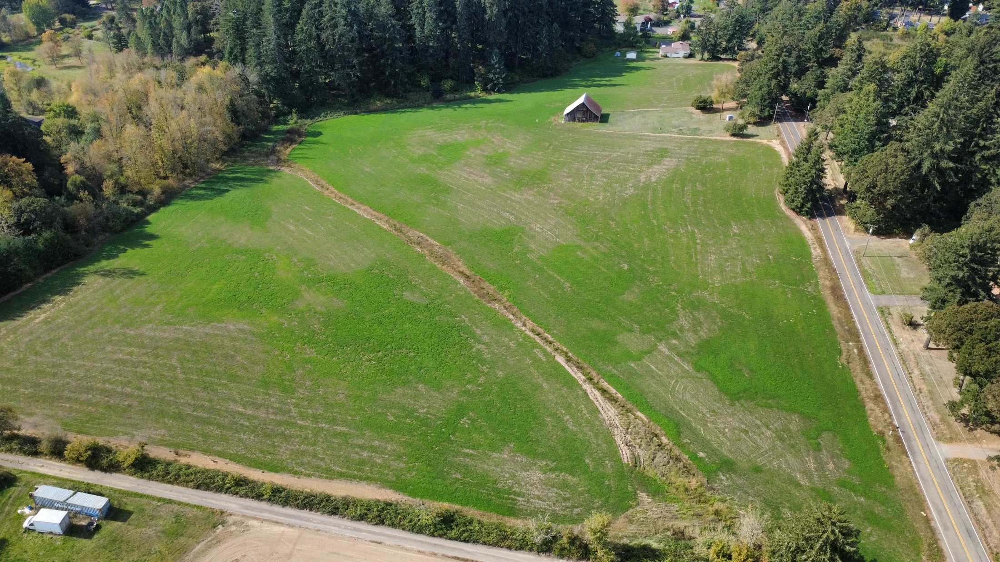
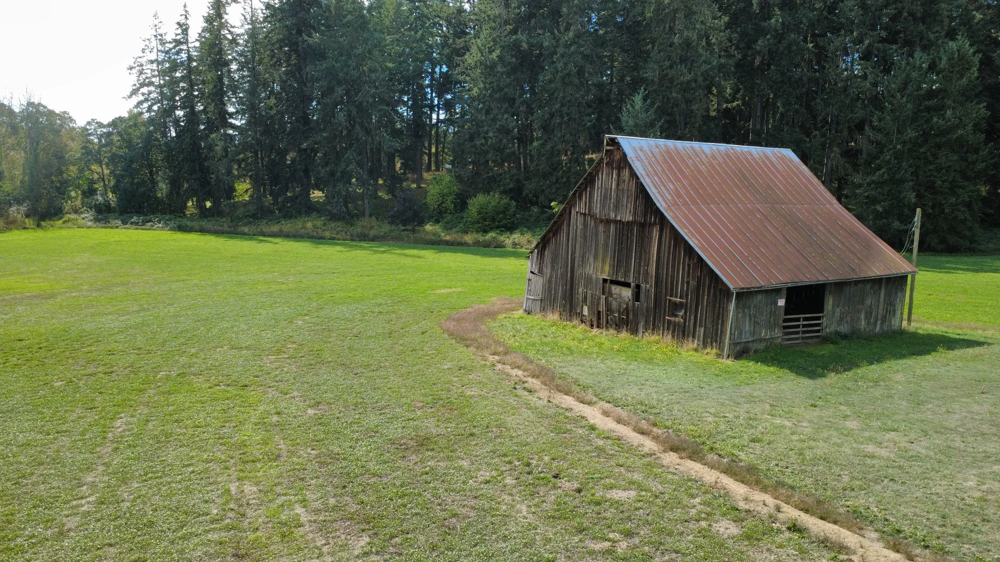
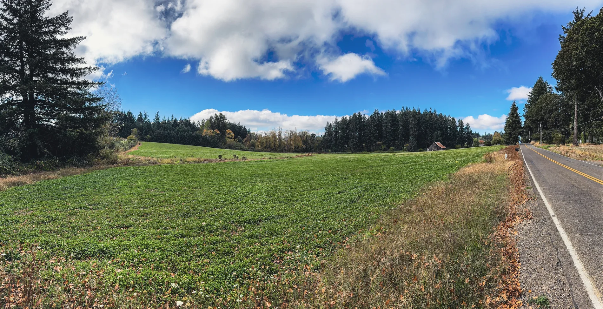
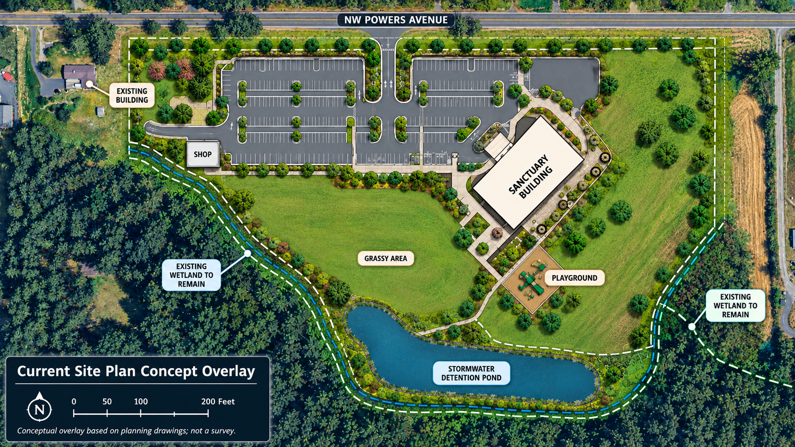
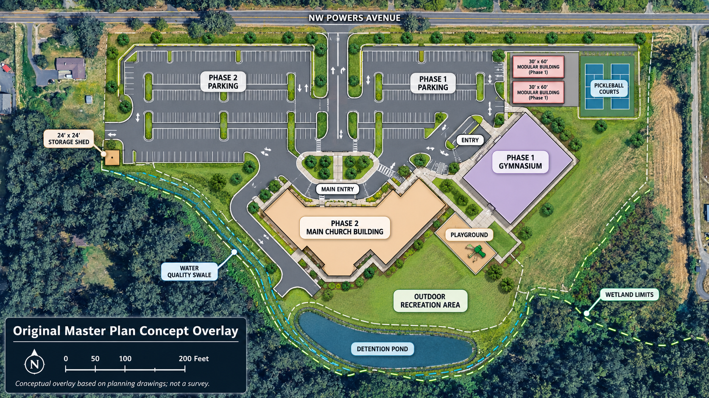

Road safety & traffic
Powers Avenue is a rural road. Residents have raised concerns about increased vehicle trips, roadway widening, shoulder conditions, and constrained right-of-way.

A neighborhood worth protecting
Keep Powers rural.
Northside Church proposes a 28,557-square-foot worship and event facility with 286 parking spaces on NW Powers Avenue. Neighbors are fighting for safer roads, rural character, and responsible land-use decisions.
Stand with your neighbors
Your support helps neighbors prepare for a possible LUBA appeal, review the public record, and keep the community informed. Any appeal date will be posted only after the County decision becomes final.
What’s at stake
Neighbors are challenging the approval because they believe the project’s size and intensity are incompatible with the surrounding RR-2 rural residential area.
The application has changed substantially during review. The project was initially described to the public as an 18,902 sq ft first-floor building serving up to 500 attendees. Later filings disclosed a 28,557 sq ft gross floor area, 286 parking spaces, and a preliminary building-code occupant load of 1,419.
Why this matters to other neighborhoods →
This reaches beyond Powers Avenue
This isn't just about one church proposal. It's about how Benton County decides whether large, intensive developments belong in rural residential neighborhoods.
When the County evaluates a project of this scale as compatible with its surroundings, that reasoning could influence the arguments made about future proposals elsewhere. Neighbors across the county have a stake in how land-use standards are applied.
See the land-use recordFrom the neighborhood
Images shared by Saving Powers volunteers show open ground, an older barn, and rural roadside views in the Powers Avenue area. These photos provide geographic context, not a survey of the project boundaries.



Site plans
The current site plan is shown first so visitors can understand the proposal now under discussion. The earlier two-phase master plan is still included below as background context.

The graphic below shows the earlier two-phase campus concept, including Phase 1 and Phase 2 parking, a gymnasium, future main church building, modular buildings, recreation areas, and other site features.

Traffic by the numbers
Benton County's Transportation System Plan says Primary Local Roads are expected to have a maximum of 700 average daily trips (ADT). County staff, relying on the County-retained DKS Associates trip analysis, projected 990 ADT on the east leg toward Scenic Drive if the project is developed.
The same County analysis projected 505 ADT on the west leg toward Oak Grove. Staff concluded that the development would increase traffic on Powers Avenue beyond what is expected for a Primary Local Road and recommended denial unless Condition P-12, or a similar roadway-improvement condition, is applied.
≈141% of the 700-ADT benchmark — about 290 trips/day over.
Why neighbors object
Powers Avenue is a rural road. Residents have raised concerns about increased vehicle trips, roadway widening, shoulder conditions, and constrained right-of-way.
The proposed use includes activity beyond Sunday services. Neighbors are concerned about amplified sound, evening use, and lighting near existing homes.
A large building and nearly four acres of paved parking would materially change the visual and physical character of the site and surrounding neighborhood.
Where things stand
October 20 meeting: Commissioners are scheduled to consider written findings; their final action has not yet been confirmed.
If the decision becomes final: A LUBA notice of intent to appeal is generally due within 21 days of finality. The exact deadline has not yet been verified.
Benton County meeting · October 20
Tuesday at 9:00 AM Pacific. The meeting start is not the time of the Northside agenda item.
How to follow the proceedings
Kalapuya Building · Holmes & Shipley Room, 4500 SW Research Way, Corvallis.
Use the County’s meeting page for the Zoom link, agenda, and public portal.
The published agenda indicates no public testimony will be accepted on the Northside item. You may observe, but should not expect to testify.
How the process works
Land-use cases can feel like alphabet soup. Here’s what each major step actually means, what changed, and why it matters to neighbors.
Northside Christian Church submitted a conditional-use application and a parking variance request for the Powers Avenue property.
This started the formal County land-use process. The plans, studies, staff review, public testimony, and later appeals all build from the application and the official record.
Why it matters: This is when the proposal became a public land-use case and neighbors gained formal opportunities to review evidence and participate.
During the open-record process, Phase 2 and the parking variance were withdrawn, leaving a smaller version of the proposal for the County to decide.
The project changed while it was under review. The original master plan still explains the history, but the County can only approve the application that is actually before it now.
Why it matters: Keeping the current proposal separate from the earlier long-range concept makes the opposition more accurate and harder to dismiss.
The Benton County Planning Commission voted 4–2 against the proposal.
The first County decision-making body to weigh the case concluded the application should not be approved. That did not end the case because the decision could be appealed to the Board of Commissioners.
Why it matters: The denial shows that a majority of the Planning Commission found the land-use concerns serious enough to reject the proposal.
Later materials identified 28,557 sq ft of gross floor area, 286 parking spaces, and a preliminary building-code occupant load of 1,419.
The record was no longer describing only the earlier 18,902 sq ft first-floor figure. Reviewers and neighbors had to evaluate the project using the updated information.
Why it matters: Building size affects required parking, traffic analysis, site impacts, and how the project fits the surrounding rural area.
The Board of Commissioners voted to approve the project subject to written findings and revised conditions.
The elected County commissioners reached a different result from the Planning Commission, but the vote was not yet the final written land-use decision.
Why it matters: The written findings explain the County’s legal reasoning and conditions. Those findings become central if the decision is challenged.
Commissioners are scheduled to consider written findings on October 20. No final outcome is assumed here.
The Board’s September vote was tentative. A final written decision is important for understanding any appeal rights and deadlines.
Why it matters: LUBA deadlines depend on when the decision becomes final; this page will not guess an appeal filing date.
Read it yourself
We’d rather show the documents than ask you to take anyone’s word for it.
Community response covering project scale, transportation, utilities, noise, light, and land-use compatibility.
Open document → PDF · 12 pagesLegal argument submitted during the county appeal process.
Open document → PDF · 14 pagesTransportation analysis prepared for the Saving Powers response.
Open document →Complete archive
The full record from the earlier Saving Powers website, grouped by stage of the appeal. Documents currently open from the original site until their PDFs are copied into this project.
21 documents
The original two-phase concept included an 18,902 sq ft gymnasium in Phase 1 and a much larger main sanctuary in Phase 2. Phase 2 and the parking variance were later withdrawn. During the August open-record period, the applicant clarified that the remaining building’s gross floor area was 28,557 sq ft rather than the earlier 18,902 sq ft first-floor figure.
Campaign materials
Flyers and graphics created by neighbors to make the scale of the proposal understandable at a glance.
Get involved
Help fund the land-use appeal, put up a yard sign, share the public record, or join neighbors working to protect Powers Avenue.